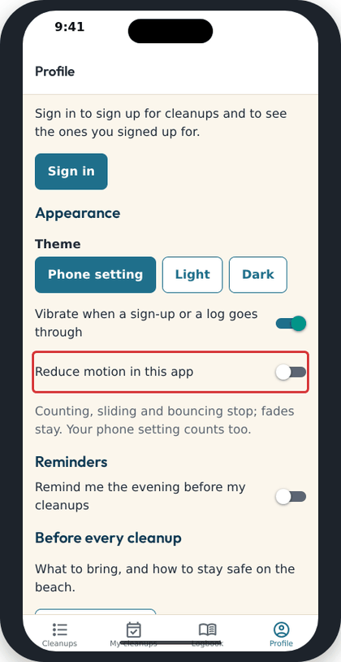
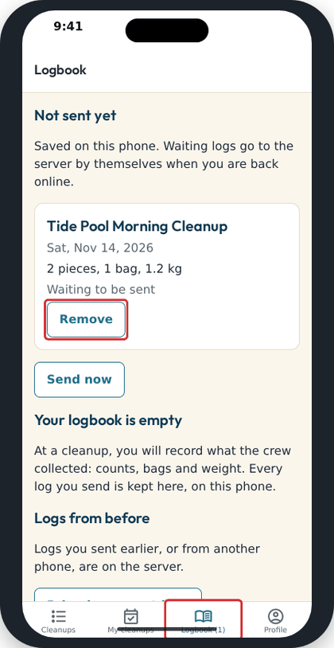
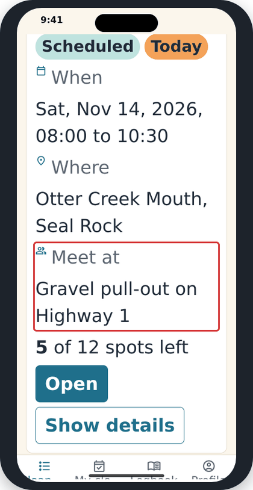

♿ Lesson 8.1: Accessible Mobile Apps
Somewhere on a beach this weekend, a volunteer is logging a bag of bottle caps with VoiceOver reading every word aloud. Another has her phone's text at its largest size because she left her reading glasses in the car. A third is wearing work gloves. Every lesson so far added labels, roles and finger-sized buttons as it went; today you check the whole of Shoreline Crew the way a careful team does before a release: screen by screen, with the tools the web preview offers and then with a real screen reader and the largest text in your hands. Then you fix what is left.
🎯 Learning Objectives
By the end of this lesson, you will be able to:
- Explain how VoiceOver and TalkBack move through a React Native screen, and describe an element with its role, label, state, value and (sometimes) hint
- Audit a whole app systematically: automated checks and the accessibility tree in the web preview, then a screen reader and large text on a phone, knowing what each one can and cannot tell you
- Hide decoration with
aria-hidden, group what belongs together, and make names that start with the words people see - Announce changes on an iPhone, where
accessibilityLiveRegiondoes nothing - Support the phone's text size: keep
allowFontScaling, usemaxFontSizeMultiplieronly where you can justify it, and switch layouts withfontScale - Give every control a touch target of at least 44 by 44 points (48 by 48 in Shoreline Crew)
📦 Code for this lesson
Starting code: lesson-28-start.zip · Finished code: lesson-28-end.zip. Each folder has a README with the commands to run it.
In This Lesson
👋 Welcome: An Audit, Not a Feature
Accessibility is not a module you add at the end, and Shoreline Crew did not treat it as one. Lesson 2.3 hid decorative icons, Lesson 2.4 gave every button a role, a label and 48 points of height, Lesson 4.3 announced form errors, Lesson 7.1 made each tally one element with its final number, and Lesson 7.3 followed Reduce Motion. So today is not "now we make it accessible". It is the step every serious team takes before a release: check everything, systematically, with the people who will use it in mind, and fix what slipped through.
Last lesson's "Before the Next Lesson" asked you to use one app you know with VoiceOver or TalkBack for five minutes. If you did, you already know the two big lessons of today: a screen reader experiences an app one element at a time, in order, by ear, and small things (an icon read as "image", a word read twice, a button called "button") turn a quick task into a slow one. By the end of this lesson:
- You have audited every screen of Shoreline Crew in the web preview and on your phone, and you know which findings each tool can and cannot make.
- Decoration is silent on all three platforms, switch rows are one big target and one screen-reader stop, and the Logbook tab's name matches its words.
- iPhone users hear changes (a sent log, a question, an error) the way Android users already did.
- The largest text sizes work: tallies and detail rows change shape instead of squeezing, and long button labels wrap.
Why it matters for your work: about one in six people lives with a disability, and many more have a temporary or situational one (a broken arm, sun glare, gloves). App stores, public-sector contracts and a growing number of laws expect apps to meet accessibility standards; WCAG 2.2, the web's guidelines, is what most of them point to for mobile apps too. "Can you run an accessibility pass on this?" is a request you will get, and doing it methodically is a skill employers notice.
🌱 Feeling clumsy with a screen reader is normal
The first ten minutes with VoiceOver or TalkBack are disorienting for everyone: the phone stops doing what you expect, and a swipe means something different. That clumsiness is information, not failure. Go slowly, keep the "turn it off" shortcut written down (Step 2), and remember that the people who use screen readers every day are fast and fluent: you are learning a little of a language they speak well.
🗣️ How a Screen Reader Meets Your Screen
On the web you met screen readers through the DOM: headings, landmarks, <button> and aria-* attributes. On a phone there is no DOM, but the idea is the same. React Native turns your components into native views, and the phone builds an accessibility tree from them: a list of elements a screen reader can stop on. VoiceOver (iPhone) and TalkBack (Android) then let a person move through that list:
| To… | VoiceOver (iPhone) | TalkBack (Android phone) |
|---|---|---|
| Turn it on or off | Settings > Accessibility > VoiceOver; set the Accessibility Shortcut to triple-click the side button | Settings > Accessibility > TalkBack; the shortcut is usually holding both volume keys for a few seconds |
| Hear what is under your finger | Touch it (drag to explore) | Touch it (drag to explore) |
| Go to the next / previous element | Swipe right / left with one finger | Swipe right / left with one finger |
| Press the element | Double-tap anywhere | Double-tap anywhere |
| Scroll | Swipe with three fingers | Swipe with two fingers |
| Go back | Two-finger scrub (a quick "Z") | The system back gesture, or swipe down then left |
| Read from here on | Swipe down with two fingers | From the TalkBack menu: "Read from next item" |
(These are the gestures Apple's and Google's guides describe; your phone's version may differ slightly, and TalkBack's menus change between versions.) For each element, the screen reader says a short sentence built from a few properties, and React Native has a prop for each:
| Part | Question it answers | React Native prop | Shoreline Crew example |
|---|---|---|---|
| Label | What is it called? | accessibilityLabel (otherwise: the text inside) | "Open Weekend Cove Cleanup" |
| Role | What kind of thing is it? | accessibilityRole: button, link, header, switch, radio, image, alert… | "…, link" |
| State | What is it like right now? | aria-checked, aria-expanded, aria-selected, aria-disabled, aria-busy (or disabled) | "Show details for…, expanded" |
| Value | How much? | accessibilityValue (or aria-valuenow and friends) for sliders and adjustable controls | (Lesson 5.4's adjustable stepper exercise) |
| Hint | What will happen if I press it? | accessibilityHint: optional, said after a pause, and people can turn hints off | (Exercise 2 adds one) |
Shoreline Crew has written state with the aria-* names since Lesson 2.4: React Native reads them on phones, and react-native-web turns them into the same HTML attributes in the web preview, where accessibilityState was ignored. Here is everything on one control:
import { Pressable, Text } from 'react-native';
type RemoveButtonProps = { title: string; sending: boolean; onAsk: () => void };
// Label, role, state and hint on one control: what a screen reader says about it
export function RemoveButton({ title, sending, onAsk }: RemoveButtonProps) {
return (
Remove
);
}VoiceOver would read it roughly as "Remove the log for Tide Pool Morning Cleanup, button", then, after a short pause, the hint. With sending true it adds "dimmed" (VoiceOver) or "disabled" (TalkBack). The exact words and their order belong to each screen reader, which is one reason the course says "roughly": you design the parts, the phone speaks them.
💡 Mental model: the radio call
On a cleanup, the crew lead on the radio never says "the thing over there". Each call is short and in a fixed order: who you are, what you see, what state it is in. "Rocks team: three full bags at the north stairs, ready for pickup." A screen reader makes a radio call for every element: label, role, state, and sometimes a hint about what happens next. A good call is short, never repeats itself, and never makes the listener guess. Decoration is radio silence: nothing to report.
Elements: one stop or many
Which views become elements decides how many swipes a screen takes. A Text is an element; a Pressable is one element including the text inside it (its children are read as its label); a plain View is not. Two props change that:
accessibleon aViewmakes the view and everything in it one element, read as one sentence. Lesson 7.1's tally does this: "42 pieces" is one stop, not "42" and "pieces" (and not every number on the way up).aria-hiddenremoves a view and everything in it from the tree: it is never read and never focused. It is for decoration whose meaning is already in words nearby.
import { Text, View } from 'react-native';
type LogSummaryProps = { title: string; date: string; pieces: number };
// Three texts, one stop: "Tide Pool Morning Cleanup, Sat, Nov 14, 2 pieces"
export function LogSummary({ title, date, pieces }: LogSummaryProps) {
return (
// One element: read as one sentence, the texts inside are not stops of their own
{title}
{date}
{pieces} pieces
);
}Grouping has a cost, which Lesson 4.1 named when it kept Open and Show details as two separate buttons instead of making the whole card pressable: React Native's documentation says an accessible view groups everything inside it, so a button inside a grouped card cannot be reached on its own any more. Group text that belongs together; never group controls into it.
🔎 Auditing the Whole App
An audit is a checklist run against every screen and every state of a screen (empty, loading, failed, signed out, signed in, a log waiting, a question open). Two kinds of tools, used together:
| Tool | What it can tell you | What it cannot |
|---|---|---|
| The web preview + Chrome DevTools: Lighthouse's accessibility audit (built on the axe-core engine) and the Elements panel's Accessibility pane (the browser's accessibility tree) | Missing labels and roles, names that do not match the words on screen, low contrast, decoration that is not hidden, elements read twice, the size of each control in the browser | What VoiceOver or TalkBack actually say, in which order, and how gestures, announcements, native headers, tab bars and the phone's text size behave. react-native-web is a translation of your props into HTML, not a phone |
| Your phone: VoiceOver or TalkBack, the largest text size, your thumb (and, optionally, Xcode's Accessibility Inspector on a Mac or Google's free Accessibility Scanner app on Android) | The real experience: reading order, what each element says, whether announcements arrive, how large text lays out, whether targets are easy to hit | Nothing systematic by itself: you have to walk every screen and state on purpose, and write down what you find |
⚠️ A clean web audit is not an accessible app
Automated checks find only part of the real accessibility problems (published estimates range from about a third to about half), and on React Native they check the web translation of your app. Use them to catch the mechanical mistakes quickly, every time; never use them as proof. The proof is a person using a screen reader and large text on a real phone.
The course ran that loop over the starting code of this lesson: axe-core (the engine inside Lighthouse) on 20 screens and states in the web preview, every control's size, the browser's accessibility tree, and an emulation of large text (every text's size and line height doubled and tripled in the page, while padding, widths and icons stayed the same, which is what the phone's text size does). Here is what it found, and what today's project does about each:
| Finding (measured in the web preview) | Why it matters on a phone | Fix (step) |
|---|---|---|
| The swipe strip's word "Remove" is in the accessibility tree; decorative icons and the strip use iPhone- and Android-only props | On phones those props work; the web preview, where you audit, cannot see that they do, and one prop does both jobs | aria-hidden (Step 3) |
| Every switch row is read twice ("Reduce motion in this app", then "Reduce motion in this app, switch"), and the switch itself is a 40 by 20 pixel target; tapping the words does nothing | Two stops per setting, and a target smaller than a fingertip | The whole row presses the switch; the words are seen, not read (Step 4) |
axe label-content-name-mismatch (serious) on the Logbook tab: the visible text is "1Logbook" (the badge's digit, then the word), the name "Logbook, 1 not sent yet" | Voice control users say what they see; the badge's red with white text is also only about 3.5:1 | The count moves into the tab's words (Step 5) |
(Read in React Native's documentation) accessibilityLiveRegion, used in 21 places, is Android only | iPhone users hear nothing when a log is sent, a question appears or a form error shows up | One change in AppText (Step 6) |
| Large text, tripled: the four tallies run into each other ("1 42 1 2.5", "pieces" cut off); detail labels in their 72-point column break "Meet" into "M ee t"; "Show details" runs off the card | People who need large text get a broken summary and unreadable cards | Layouts change shape with fontScale; buttons never grow wider than their space (Step 7) |
| The stepper's − and + buttons are 47 pixels wide; the search box's text field is 35 pixels tall inside its 48-pixel row | Just under the course's 48; taps on the row miss the field | A minimum width on Button; the field fills its row (Step 7) |
axe document-title (serious) and region (moderate) on every screen | Not at all: a phone app has no HTML document, no title and no landmarks | Left as they are, on purpose (Common Questions) |
Notice what is not on the list: missing labels, unlabeled icon buttons, missing roles, or contrast problems in the app's own colors. Earlier lessons built those in, and the audit confirmed it. That is the payoff of doing accessibility as you go: the audit finds edges, not foundations.
🔠 The Phone's Text Size
On the web, people zoom the page. On a phone, they set a text size for every app: iPhone in Settings > Accessibility > Display & Text Size > Larger Text (with "Larger Accessibility Sizes" for the biggest ones), Android in Settings > Display > Font size (names vary by maker). React Native follows that setting by default, and Lesson 2.1 told you not to fight it. The numbers are larger than most people expect (from Apple's and Google's published type scales):
| Setting | Body text (normally 16 to 17) | Multiplier, roughly |
|---|---|---|
| iPhone, largest standard size | about 23 | × 1.35 |
| Android, largest font size | up to twice the default (newer Android versions grow large text a little less) | × 2 |
| iPhone, largest accessibility size | about 53 | × 3.1 |
Three tools, in the order you should reach for them:
- Layouts that let text grow (Lessons 2.1 and 2.2): no fixed heights on anything with text,
minHeightinstead ofheight,flex: 1on text in a row,flexWrapon rows of buttons and badges. Most of Shoreline Crew survived the tripled text because of these. - A different layout at large sizes:
useWindowDimensions().fontScale(Lesson 2.5) is the person's multiplier, and a component re-renders when it changes. When things side by side get too narrow, put them on top of each other. That is not a workaround: Apple's own apps switch rows to stacks at accessibility sizes. - A limit, only where it is justified:
maxFontSizeMultiplieron aTextcaps how far it grows (1.75 means "at most 1.75 times"). Text that is already big (a 32-point title, a tally number) can grow less, the way Apple's own type scale grows large titles far less than body text. Never put a limit on body text, and never useallowFontScaling={false}, which switches the person's setting off for that text entirely.
Shoreline Crew gets one small hook for the second tool, so every component uses the same threshold:
import { useWindowDimensions } from 'react-native';
// true when the person has made text at least one and a half times its normal size in the phone's
// settings: then rows of text side by side get too narrow, and a few layouts change shape.
// useWindowDimensions re-renders the component when the text size changes.
export function useLargeText() {
const { fontScale } = useWindowDimensions();
return fontScale >= 1.5;
}Why 1.5? Up to the iPhone's largest standard size (about 1.35) the normal layouts hold; from Android's larger steps and the iPhone's accessibility sizes on, side-by-side text gets cramped. It is a judgment, written in one place, which makes it easy to change after you have watched someone use the app.
📱 On your phone: the tab bar decides for itself
Expo Router's tab bar (React Navigation's code inside it) does not scale tab labels on iPhone. Instead, with a large text size, pressing and holding a tab shows its icon and label magnified in the middle of the screen: Apple's Large Content Viewer, which Apple recommends for bars that cannot grow. On Android the labels do scale, and the course's emulation showed "My cleanups" cut short at double size. The icon and the tab's full accessible name are still there, so Shoreline Crew leaves the library's choice as it is. (Read in the library's code; Step 8 checks both on your phone.)
👆 Touch Targets and Announcements
Targets
Apple asks for controls at least 44 by 44 points; Google's Material guidelines ask for 48 by 48 dp; WCAG 2.2 sets a minimum of 24 by 24 for the web and 44 by 44 as its stricter level. Shoreline Crew has used 48 since Lesson 2.4, because a thumb in a work glove on a windy beach is the real test. Lesson 2.4's tools still apply: minHeight (and now minWidth), padding, and hitSlop to grow the touchable area beyond what is drawn (on phones only: the web preview ignores hitSlop). Today's audit adds one more: make the obvious thing the target. People tap the words of a setting, not only its switch, and they tap anywhere in a search box, not only on the line where text appears.
Announcements
Some changes happen where the person is not looking: "Log sent. Thank you!" replaces a form, a question appears under a card, an error shows up under a field. Shoreline Crew has marked 21 such texts with accessibilityLiveRegion="polite", from the sign-in form's errors (Lesson 4.3) on. In the web preview that became aria-live, and on Android TalkBack announces the change. On iPhone, React Native's documentation lists the prop as Android only: VoiceOver hears nothing until the person happens to move to the text.
iPhone's way is to ask VoiceOver to say something: AccessibilityInfo.announceForAccessibility(text), or announceForAccessibilityWithOptions(text, { queue: true }), which waits until VoiceOver finishes what it is saying instead of cutting it off (iOS only, per React Native's documentation). Because every one of the 21 texts goes through AppText, one change there covers them all: when an AppText marked as a live region appears or changes its words, on iPhone it asks VoiceOver to say them. That is the quiet reward for Lesson 2.1's rule that every text goes through one component.
⚠️ Common Mistakes
Each of these was made in a copy of the project and measured in the web preview or with the tools, except where the card says it comes from documentation.
⚠️ Writing aria-hidden="true" the web way
In HTML, ARIA attributes are strings. In React Native, aria-hidden is a boolean, and TypeScript says so:
Expected output
src/components/Icon.tsx:35:6 - error TS2322: Type '{ name: { ios: "calendar"; android: "calendar_today"; web: "calendar_today"; } | { ios: "mappin.and.ellipse"; android: "location_on"; web: "location_on"; } | { ios: "person.2"; android: "group"; web: "group"; } | ... 7 more ... | { ...; }; size: number; tintColor: string | ... 1 more ... | NativeColorValue; "aria-hi...' is not assignable to type 'ViewProps'.
Types of property '"aria-hidden"' are incompatible.
Type 'string' is not assignable to type 'boolean | undefined'.
35 <SymbolView
~~~~~~~~~~
Found 1 error in src/components/Icon.tsx:35Write aria-hidden on its own (it means true) or aria-hidden={false}.
⚠️ Fixing large text by switching it off
A tally overflows at the largest size, and allowFontScaling={false} makes the problem disappear on your phone. It also makes the text unreadable for exactly the person who turned the size up. (No error and no warning: the web preview does not even show a difference, because its text size is always 1.) Change the layout first (fontScale, wrapping); cap big text with maxFontSizeMultiplier only when it is already large.
⚠️ A fixed width for text
Lesson 2.2's detail rows gave the label a width of 72 so the values line up. Measured with the text tripled: "Meet at" no longer fit even one word per line, and the label broke inside the word: "M", "ee", "t", "at". A fixed width is a fixed height's sideways twin. With large text, let the label take its own line (Step 7).
⚠️ Making a row one control the wrong way
The first try at today's switch row put focusable={false} on the row's Pressable so keyboards would skip it. Measured in the web preview: every row was still a Tab stop with no name, right before its switch (react-native-web's Pressable sets its own tabIndex; read in its code). tabIndex={-1} is the prop it listens to, and on Android, per React Native's documentation, it means the same thing. And the obvious alternative, an accessible row with the switch inside, would group the switch away (the Elements section above): the switch stays the control, and the row only widens the target.
⚠️ A name that does not start with what people see
People who use voice control (Voice Control on iPhone, Voice Access on Android) say the words they see: "Tap Logbook". The name has to contain those words, ideally at the start (WCAG's "Label in Name"). axe checks it in the web preview, and it flagged the Logbook tab because its badge put a digit before the word: the text on screen was "1Logbook". The course tried four names; every one failed while the badge was there, and "Logbook, 1 not sent yet" passed as soon as the badge was gone. The fix is not a cleverer name, it is words that match (Step 5).
🛠️ Project: Audit and Fix Shoreline Crew
You audit first, in the web preview and on your phone, and write down what you find. Then you fix the findings one by one, and finish by running the same checks again. Keep your findings in a table (screen, state, what you noticed, how bad, fixed in): it is the document a team would review, and it feeds your final project.
Step 1: Audit the web preview (15 min)
Start shoreline-api and npx expo start, and open the web preview (w) in Chrome. Then, for each of these screens, open Chrome's DevTools (F12, or ⌥ Option+⌘ Cmd+I on a Mac):
- Lighthouse panel: choose only the Accessibility category and the Mobile device, then Analyze page load. Do it on Cleanups, a cleanup, Profile, and the Logbook with a log waiting (sign in as
theo.nakamura@example.com, passwordshoreline-demo, stop shoreline-api, send a small log for today's cleanup, then start the API again later). - Elements panel > Accessibility pane (in the side panel; turn on "Enable full-page accessibility tree" to see the whole tree): select the "Reduce motion in this app" row on Profile and the Logbook tab, and read their names and roles.
You should find the switch rows listed twice in the tree and a name problem on the Logbook tab ("Elements with visible text labels do not have matching accessible names" is how Lighthouse words axe's label-content-name-mismatch), plus a missing document title on every page. Lighthouse runs axe-core, the engine the course used, but not every rule and not every state of every screen, so your list may be shorter than the table in Auditing the Whole App. Write down every finding, including the ones you decide not to fix.
Step 2: Audit with a screen reader on your phone (15 min)
Open Shoreline Crew in Expo Go (your computer's address in .env.local, Lesson 5.1). Before you turn the screen reader on, set up the way out: on iPhone, Settings > Accessibility > Accessibility Shortcut > VoiceOver (then triple-click the side button toggles it); on Android, Settings > Accessibility > TalkBack and its shortcut (often both volume keys held for a few seconds). Then, with the screen reader on and using only swipes and double-taps:
- On Cleanups, swipe through the first card. Count the swipes. Does each element say something useful? Does "Open" say which cleanup?
- On Profile, swipe through the three switches. How many stops does each one take?
- Sign in, get a log waiting (as in Step 1), and go to the Logbook tab. What does the tab say? Swipe to the card: is the red strip behind it ever read?
- On iPhone: send the waiting log with Send now while VoiceOver is on, or open the remove question. Do you hear anything about the change?
You should hear each switch twice on Profile, and on iPhone, silence when the log is sent. Note anything else that surprises you: that is the part of the audit no tool does for you. Turn the screen reader off before you go back to coding.
Step 3: Decoration, hidden everywhere (10 min)
Lessons 2.3 and 7.2 hid decoration with accessibilityElementsHidden (iPhone) and importantForAccessibility="no-hide-descendants" (Android). Phones honor them; react-native-web ignores them, so the web preview, where you audit, read the swipe strip's "Remove". aria-hidden is one prop for all three: React Native's View turns it into both phone props (read in its code), and react-native-web into the HTML attribute. In src/components/SwipeToRemove.tsx:
{/* Behind the row. Only a picture of what the swipe does: screen readers skip it */}
- <Animated.View
- style={[styles.behind, revealed]}
- accessibilityElementsHidden
- importantForAccessibility="no-hide-descendants"
- >
+ <Animated.View style={[styles.behind, revealed]} aria-hidden>
<Icon name="remove" color={styles.word.color} />The icon needs one more thought. SymbolView draws a React Native View on Android and the web, so aria-hidden works there. On iPhone it is Expo's own native view, and React Native passes props to it as they are, without the translation View does (read in both libraries' code). So the icon keeps the iPhone prop and swaps the Android one for aria-hidden. In src/components/Icon.tsx:
tintColor={color ?? colors.icon} // the theme's icon color unless the caller picks one
+ // Decoration, hidden from screen readers: aria-hidden on Android and in the web preview
+ // (SymbolView draws a View there); on iPhone, SymbolView is Expo's own native view, which
+ // React Native hands the iOS prop to as it is
+ aria-hidden
accessibilityElementsHidden
- importantForAccessibility="no-hide-descendants"
/>Lesson 7.3's LogSentMark already used aria-hidden on a View, which needs nothing else.
Step 4: One row, one target, one stop (15 min)
Lesson 2.4's SwitchRow had two problems the audit found: the words and the switch were two stops for a screen reader, and only the small switch answered a finger. Replace src/components/SwitchRow.tsx:
import { Pressable, StyleSheet, Switch } from 'react-native';
import { AppText } from '@/components/AppText';
import { useTheme } from '@/hooks/useTheme';
import { spacing } from '@/theme/spacing';
type SwitchRowProps = {
label: string;
value: boolean;
onValueChange: (value: boolean) => void;
};
// An on/off choice: the words on the left, the phone's own switch on the right. The whole row is
// the touch target; a screen reader meets one control, the switch, which says the words itself.
export function SwitchRow({ label, value, onValueChange }: SwitchRowProps) {
const { colors } = useTheme();
return (
<Pressable
onPress={() => onValueChange(!value)}
accessible={false} // not a stop of its own for screen readers: the switch is
tabIndex={-1} // nor for a keyboard (Android, the web preview): Tab goes to the switch
style={styles.row}
>
{/* Seen, not read: the switch's accessibilityLabel says the same words */}
<AppText style={styles.label} aria-hidden>
{label}
</AppText>
<Switch
value={value}
onValueChange={onValueChange}
accessibilityLabel={label} // a screen reader says the words with the switch
// A finger anywhere on the row presses the row (above), so the switch never gets
// the same touch twice. Screen readers and keyboards still reach the switch itself.
style={styles.switch}
// Gray when off, Sea Teal when on. iOS paints the off track with ios_backgroundColor
// (Android and the web ignore that prop).
trackColor={{ false: colors.trackOff, true: colors.action }}
ios_backgroundColor={colors.trackOff}
thumbColor={colors.knob} // a white knob on every platform, by day and by night
/>
</Pressable>
);
}
const styles = StyleSheet.create({
row: {
flexDirection: 'row',
alignItems: 'center',
gap: spacing.md,
minHeight: 48,
},
label: {
flex: 1, // long words wrap instead of pushing the switch off the screen
},
switch: {
pointerEvents: 'none', // touches go through to the row
},
});- The row is a
Pressablethat flips the value, so a tap on the words, the gap or the switch does the same thing. It is at least 48 points tall, as before. - The switch takes no touches (
pointerEvents: 'none'in its style) so a tap on it reaches the row once, not the switch and the row both. Measured in the web preview: a tap on the words, on the switch, on the gap and Space on the keyboard each flipped the switch exactly once. - The switch is still the control for screen readers and keyboards: it keeps its role, its state and its
accessibilityLabel. The row isaccessible={false}andtabIndex={-1}, so it is not a stop of its own, and the words arearia-hidden, so they are not read a second time. Measured: the tree went from "text, switch" to "switch" for each row, and Tab goes straight from switch to switch.
Every switch in the app (Cleanups' two filters, Profile's three settings) gets this at once, because they all use SwitchRow.

Step 5: A tab whose name matches its words (10 min)
Lesson 5.5 put the count of waiting logs in a badge on the Logbook tab and gave the tab the name "Logbook, 1 not sent yet". The name starts with the tab's word, which is what WCAG's Label in Name asks for, but the badge put its digit in front of the word on screen, and the badge's default white on red is only about 3.5:1 for its small digits. Put the count in the tab's words instead. In src/app/(tabs)/_layout.tsx:
tabBarIcon: ({ color, size }) => <Icon name="logbook" color={color} size={size} />,
- // A small count on the tab while logs wait, and the same news for a screen reader
- tabBarBadge: unsent > 0 ? unsent : undefined,
- tabBarAccessibilityLabel: unsent > 0 ? `Logbook, ${unsent} not sent yet` : 'Logbook',
+ // While logs wait, the count is part of the tab's words, and the name a screen reader
+ // hears starts with exactly those words (with none waiting: the same as the other tabs)
+ tabBarLabel: unsent > 0 ? `Logbook (${unsent})` : 'Logbook',
+ tabBarAccessibilityLabel: unsent > 0 ? `Logbook (${unsent}), not sent yet` : undefined,
}}tabBarLabelis the tab's visible words; the screen's header still says "Logbook", becausetitledid not change.- The name begins with exactly what is on screen, "Logbook (1)", so "Tap Logbook" and "Tap Logbook 1" both match, and a screen reader adds "not sent yet". Measured: axe's
label-content-name-mismatchis gone, and the course's checks no longer need to ignore it. - With nothing waiting,
undefinedlets the tab bar name the tab itself, like the other three (on iPhone the library adds "tab, 3 of 4", read in its code).

Step 6: Announcements on iPhone, and big titles (10 min)
One change in src/components/AppText.tsx makes every live text speak on iPhone, and caps how far the already-large titles grow. First the imports:
-import { StyleSheet, Text, type TextProps } from 'react-native';
+import { type ReactNode, useEffect } from 'react';
+import { AccessibilityInfo, Platform, StyleSheet, Text, type TextProps } from 'react-native';
Then a helper and the component:
+// The words of a text made of strings and numbers (what a screen reader would say)
+function wordsOf(children: ReactNode): string {
+ if (typeof children === 'string' || typeof children === 'number') {
+ return String(children);
+ }
+ return Array.isArray(children) ? children.map(wordsOf).join('') : '';
+}
+
export function AppText({ variant = 'body', style, ...rest }: AppTextProps) {
const styles = useStyles();
+ const live = rest.accessibilityLiveRegion !== undefined && rest.accessibilityLiveRegion !== 'none';
+ const words = live ? wordsOf(rest.children) : '';
+ useEffect(() => {
+ // iPhone has no live regions (accessibilityLiveRegion is for Android and the web): VoiceOver
+ // says the new words because we ask it to, queued behind whatever it is saying already
+ if (Platform.OS === 'ios' && words !== '') {
+ AccessibilityInfo.announceForAccessibilityWithOptions(words, { queue: true });
+ }
+ }, [words]);
// Later styles win: the base, then the variant, then whatever the screen passes in
- return <Text style={[styles.base, styles[variant], style]} {...rest} />;
+ return (
+ <Text
+ // Titles are big already: they grow with the phone's text size, but at most 1.75 times
+ maxFontSizeMultiplier={variant === 'title' ? 1.75 : undefined}
+ style={[styles.base, styles[variant], style]}
+ {...rest}
+ />
+ );
}wordsOfcollects the words of children made of strings and numbers, such as{bringIn.data} {…'log' : 'logs'}, which React passes as an array. That covers all 21 live texts in the app.- The effect runs when the words change, and when the text first appears, which is when most of Shoreline Crew's live texts matter: "Log sent. Thank you!", the remove question, an error under a field. It only asks VoiceOver on iPhone; Android and the web preview keep using the live region they already had.
queue: truelets VoiceOver finish what it is saying first. Without it, three form errors appearing together would cut each other off and only the last would be heard.maxFontSizeMultiplieron thetitlevariant only: 32-point titles (the banner and the tallies' numbers) grow up to 1.75 times, 56 points, while body text keeps growing all the way. It comes before{...rest}, so a screen can still pass its own.
Step 7: Large text and finger-sized targets (20 min)
Create src/hooks/useLargeText.ts exactly as shown in The Phone's Text Size. Then the tallies: two to a row with large text. In src/components/Tally.tsx:
import { AppText } from '@/components/AppText';
+import { useLargeText } from '@/hooks/useLargeText';
import { createThemedStyles } from '@/hooks/useTheme';
// ...
const styles = useStyles();
+ const largeText = useLargeText();
// ...
<Animated.View
- style={[styles.tally, counting && styles.counting]}
+ style={[styles.tally, largeText && styles.half, counting && styles.counting]}
accessible
// ...
},
+ half: {
+ minWidth: '40%', // with large text, two tallies to a row (the row wraps), not four
+ },
counting: {…and let their row wrap, in src/app/(tabs)/logbook.tsx:
flexDirection: 'row',
+ flexWrap: 'wrap', // with large text, the tallies take two rows (Tally)
gap: spacing.xs,Each tally keeps flex: 1; with a minimum width of 40%, four no longer fit on one line, so the row wraps to two lines of two. With normal text nothing changes (flexWrap only acts when things do not fit). Next the detail rows, in src/components/Detail.tsx: with large text, the row wraps, the label takes the rest of the icon's line, and the value gets a full line below:
import { Icon, type IconName } from '@/components/Icon';
+import { useLargeText } from '@/hooks/useLargeText';
import { spacing } from '@/theme/spacing';
// ...
// An icon, a label and its value side by side: the label keeps its width, the value takes the rest.
+// With large text, the value moves under the label and gets the whole width.
// Used by the cleanup cards and by the cleanup's own screen.
export function Detail({ icon, label, children }: DetailProps) {
+ const largeText = useLargeText();
return (
- <View style={styles.detail}>
+ <View style={[styles.detail, largeText && styles.wrap]}>
<View style={styles.icon}>
// ...
</View>
- <AppText variant="muted" style={styles.label}>
+ <AppText variant="muted" style={largeText ? styles.labelLarge : styles.label}>
{label}
</AppText>
- <AppText style={styles.value}>{children}</AppText>
+ <AppText style={largeText ? styles.valueLarge : styles.value}>{children}</AppText>
</View>
// ...
},
+ wrap: {
+ flexWrap: 'wrap',
+ },
+ labelLarge: {
+ flex: 1, // the rest of the first line, beside the icon
+ },
+ valueLarge: {
+ width: '100%', // a line of its own, under the icon and the label
+ },
});Then the targets. In src/components/Button.tsx, a button may never be wider than the space it is in (so "Show details" wraps inside the card instead of running off it), and never narrower than 48 (the stepper's − and + were 47):
alignSelf: 'flex-start', // as wide as its words, not stretched across a column
+ maxWidth: '100%', // ...but never wider than the space it is in: long words wrap inside
+ minWidth: 48, // a finger-sized target, even for a one-character label
justifyContent: 'center',And in src/components/SearchField.tsx, the text field fills its row's height, so a tap anywhere on the 48-point row puts the cursor in it:
flex: 1, // the field takes the space the icons leave
+ alignSelf: 'stretch', // and the row's full height: a tap anywhere on the row lands in it
paddingVertical: spacing.sm,The web preview's text size is always 1, so you cannot see these layouts there without help. The course looked at them by building a copy where useLargeText() always answers true and doubling every text in the page:


You will see the real thing on your phone in Step 8. If you want to look in the web preview now, change fontScale >= 1.5 to fontScale >= 0 for a minute (every text stays normal size, but the layouts switch), and put it back.
Step 8: Check it again, on the web and on your phone (15 min)
Run npx tsc --noEmit (it should print nothing) and npx expo lint (nothing but the env: lines). Run Lighthouse again on the Logbook with a log waiting and on Profile: the name mismatch is gone, and the Accessibility pane shows one switch per row. What remains is the missing document title, which you decided about in Step 1 (Common Questions). Then on your phone:
- With the screen reader on, swipe through Profile: one stop per switch, and a double-tap flips it. Turn it off and tap the words of a setting: the switch flips.
- Get a log waiting: the tab should say "Logbook (1)" and the screen reader something like "Logbook (1), not sent yet, tab". The red strip behind the card is never read.
- On iPhone with VoiceOver: on the Logbook, press Remove on a waiting card: you should hear the question. Press Keep it, start the API and press Send now: you should hear "Sending…". Send a new log from a cleanup's debris-log screen: you should hear "Log sent. Thank you!".
- Turn VoiceOver or TalkBack off. Set the text size to the largest (iPhone: Larger Text with Larger Accessibility Sizes on; Android: the largest font size). Open the Logbook: the tallies should sit two to a row; open the Cleanups list: detail values below their labels, "Show details" wrapping inside its card. On iPhone, press and hold a tab: its label appears magnified.
Put the text size back where you like it. Add what you saw to your findings table, including anything that still feels wrong: an audit's honest "not fixed yet" list is as valuable as its fixes.
✅ Project Completion Checklist
- You have a findings table from the web preview and from a screen reader on your phone, with a decision for each finding
- Decoration (icons, the swipe strip) is hidden with
aria-hidden, and the web preview's tree no longer reads it - Every switch row is one target and one screen-reader stop
- The Logbook tab shows "Logbook (N)" while logs wait, and its name starts with those words
- Live texts are announced on iPhone through
AppText; titles grow at most 1.75 times - With large text, tallies take two rows and detail values sit under their labels; buttons wrap and are at least 48 wide
npx tsc --noEmitandnpx expo lintpass
Your own app: run Steps 1, 2 and 8 on the app you are planning for your final project (or on its sketches): list every screen and state, and for each, what a screen reader would say and what happens at the largest text size. Decide your own "large text" threshold and which text, if any, may be capped, and write down why.
🏋️ Hands-on Exercises
Optional, but recommended: each one takes five to fifteen minutes. Undo code changes afterwards; the next lesson starts from the project as Step 8 left it.
🏋️ Exercise 1: Write the radio calls
Without running anything, write what a screen reader says (label, role, state) for each element, with today's code. Then check two of them on your phone.
- The Open button on the Weekend Cove Cleanup card
- The Show details button on the same card, after it was pressed
- The "Group by date" setting on Cleanups, off
- The pieces tally on the Logbook, showing 42
- The trash-can icon in the red strip behind a waiting card
💡 Hint
Look for accessibilityLabel, accessibilityRole, aria-* and accessible in EventCard, SwitchRow, Tally and SwipeToRemove. A Link with asChild gives its child the link role.
✅ Solution
Roughly (each screen reader words it its own way): (1) "Open Weekend Cove Cleanup, link". (2) "Hide details for Weekend Cove Cleanup, button, expanded" (the label changed with the state). (3) "Group by date, switch, off" (one stop: the words are hidden, the switch carries them). (4) "42 pieces": one element whose label is the final number, never the steps of the count. (5) Nothing: the strip is aria-hidden, and the icon inside it is decoration too.
🏋️ Exercise 2: A hint where a label is not enough
"Bring in my sent logs" is a clear label, but a volunteer may wonder whether it sends something or deletes something. Give the Logbook's button a hint that says what will happen, and tell screen readers when it is busy.
💡 Hint
Button passes every Pressable prop on, so accessibilityHint and aria-busy work on it directly. A hint describes the result, starts with a verb, and does not repeat the label or the role.
✅ Solution
import { Button } from '@/components/Button';
type BringInProps = { pending: boolean; onBringIn: () => void };
// Exercise 2: the label says what the button is; the hint says what it will do (said after a pause)
export function BringInButton({ pending, onBringIn }: BringInProps) {
return (
);
}VoiceOver reads the hint after a short pause, and people who know the app can turn hints off (iPhone: VoiceOver > Verbosity > Speak Hints), which is why the hint never holds information the label needs. aria-busy tells the screen reader the button is working, as "Bringing in…" tells everyone else.
🏋️ Exercise 3: The stepper at large text (Stretch)
At the largest sizes, the debris-log form's stepper rows squeeze the label ("Fishing line and nets") into a narrow column beside three controls, and the number box keeps its fixed 72-point width. Give Stepper a large-text layout: the label on its own line, the −, the number and the + below it, and a number box that can grow.
💡 Hint
It is Step 7's Detail pattern: useLargeText(), flexWrap: 'wrap' on the row when it is true, and a label style with width: '100%'. For the box, minWidth instead of width.
✅ Solution
In Stepper: call const largeText = useLargeText();, give the row style={[styles.row, largeText && styles.wrap]} and the label style={largeText ? styles.labelLarge : styles.label}, with wrap: { flexWrap: 'wrap' } and labelLarge: { width: '100%' }. In input, change width: 72 to minWidth: 72. With normal text nothing moves; at large sizes the label wraps onto its own line and the controls sit under it. Check it the way the course did: set the threshold to 0 for a minute, then try the largest text size on your phone.
🎯 Quick Quiz
🎯 Check Your Understanding
Question 1: Before today, VoiceOver on Profile said "Reduce motion in this app", then, on the next swipe, "Reduce motion in this app, switch, off". What was going on, and what fixed it?
Question 2: Before today, Maya (VoiceOver, iPhone) heard nothing when her waiting log was sent, while Theo (TalkBack, Android) heard it. Why?
Question 3: At the largest text size, the Logbook's four tallies run into each other. What is the best first fix?
Question 4: Lighthouse reports no accessibility problems on any Shoreline Crew screen in the web preview, apart from the document title. What can your team conclude?
Question 5: The Logbook tab shows "Logbook (2)". A volunteer who uses voice control says "Tap Logbook". Which accessible name makes that work best?
❓ Common Questions at This Stage
Why does the course leave axe's "document has no title" and "region" findings in place?
They are about HTML documents: a page title in the browser tab, and landmarks (<main>, <nav>) that help screen-reader users jump around a web page. A phone app has neither; the nearest equivalent, the screen's title read when it opens, comes from the header and tab titles Shoreline Crew already sets. Fixing them would mean web-only code (Expo Router can add a title with its expo-router/head module or a +html.tsx file) for a page nobody ships. If you ever publish the web version as a real website, fix them then. Recording "not fixed, and why" is part of an honest audit.
Can screen-reader users pull to refresh and reach the next page of cleanups?
According to Apple's and Google's guides, yes, through scrolling: VoiceOver's three-finger swipe down at the top of a list triggers the phone's refresh control, and scrolling with three fingers (VoiceOver) or two (TalkBack) moves the list, which lets FlashList reach its end and load more. Both are hidden gestures, though, and not everyone knows them. Shoreline Crew also refreshes when the app comes back to the foreground (Lesson 5.2), and Lesson 3.2's Exercise 2, a visible "Load more cleanups" button, is a good addition if your testers struggle. Try both in Step 2's walk-through.
Should every button get a hint?
No. A hint is for a result the label cannot make obvious ("asks first", "opens your camera"). Most of Shoreline Crew's labels say it all, and hints on everything make a screen reader slow: people hear them after every element unless they turn hints off. Write the label well first; add a hint when testers ask "what will this do?".
What about the map on a cleanup's screen?
A map is hard to explore by ear, which is why Lesson 6.3 gave the MapView a label and wrote the meeting point and the beach in words right next to it, with "Open in Maps" for turn-by-turn directions in an app built for that. That is the general rule for pictures, charts and maps: the information must also exist as text.
Can tests catch accessibility regressions?
Some, and cheaply. React Native Testing Library finds elements the way a screen reader does: getByRole('switch', { name: 'Reduce motion in this app' }) fails the moment a role or a name breaks. Lesson 8.3 writes tests like that. They complement, not replace, the phone audit.
🌟 Going Further: Bonus Challenge
Run a platform audit tool on your phone: Google's free Accessibility Scanner app on Android (it suggests fixes for touch targets, labels and contrast on whatever screen is open), or, on a Mac with an iPhone or the iOS Simulator, Xcode's Accessibility Inspector (its audit button checks the current screen). Compare their findings with the web preview's and with yours from Step 2. Then make the waiting log card on the Logbook one element for screen readers, with a custom action for Remove (accessibilityActions and onAccessibilityAction, which Lesson 7.2 described), and decide, with a screen reader in hand, whether it is better than today's separate button.
📓 Learning Journal
Take five to ten minutes and add today's entry to your journal:
- Key concepts you learned today
- Techniques that clicked (and the ones that have not, yet)
- Questions or confusion to look up or bring to the next session
- Ideas to try on your own
- Progress and feelings: how did this lesson go for you?
✍️ This lesson's prompt: Describe your ten minutes with a screen reader in Step 2. What was the first moment you felt lost, and what in the app (or in the phone) caused it? Then write the one sentence you would put at the top of an accessibility checklist for your own team, and why that one.
📝 Lesson Summary
🎓 Key Takeaways
- Screen readers move through elements one at a time; each element is a short "radio call": label, role, state (with
aria-*props), value, and sometimes a hint accessiblegroups a view into one element (never around controls);aria-hiddenremoves decoration on iPhone, Android and the web preview alike, whereViewtranslates it- An audit runs every screen and state through automated checks in the web preview and through a screen reader and large text on a phone; neither replaces the other
- Names start with the words people see (Label in Name), so voice control works
accessibilityLiveRegionis Android only; on iPhone,announceForAccessibilityWithOptions(…, { queue: true })speaks changes- Let text grow: layouts first, a different layout at a large
fontScalesecond,maxFontSizeMultiplieronly on text that is already large,allowFontScaling={false}never - Targets of at least 44 points (48 in this app), and the obvious thing is the target: the whole row, the whole field
| If you want to… | Go to |
|---|---|
| Look up every accessibility prop | React Native: Accessibility |
| Announce, and read accessibility settings | React Native: AccessibilityInfo |
| Learn VoiceOver's gestures | Apple: Learn VoiceOver gestures on iPhone |
| Learn TalkBack's gestures | Google: TalkBack gestures |
| Read Apple's guidance on accessibility and text size | Apple Human Interface Guidelines: Accessibility |
| Read the rule behind names that match their words | WCAG: Understanding Label in Name |
🏆 What You've Accomplished
- You audited a whole app, systematically, with the web's tools and with a screen reader and large text on a phone, and kept a findings table a team could review
- Shoreline Crew's decoration is silent everywhere, its switch rows are one target and one stop, and its Logbook tab says what it shows
- iPhone users now hear every change Android users already heard, from one change in one component
- The app holds up at the largest text sizes: layouts change shape instead of breaking
- You can explain what automated checks prove and what they do not
🔭 Looking Ahead
In Lesson 8.2: Testing the App's Logic you bring the web course's testing habits to the phone: Jest with jest-expo, the HQ's MSW handlers reused, and mocks for native modules. Then Lesson 8.3 tests screens with React Native Testing Library, finding elements by role and name, exactly the names you checked today, so an accessibility regression fails a test before it reaches a volunteer.
📋 Before the Next Lesson
- Finish Step 8 on your phone, with a screen reader and with the largest text, and commit your work
- Keep your findings table: Lesson 8.3's screen tests can lock in several of its fixes
- Write today's journal entry
🌱 Encouragement for the Journey
Today you used your own app with your eyes closed, and with text three times its size, and you fixed what got in the way. Most developers never do that once. The fixes were small (a prop, a row, a hook) because the habits from earlier lessons did the heavy lifting, and that is the real lesson: accessibility is mostly care, applied early and checked honestly. Keep the screen-reader shortcut on your phone. Every app you build from now on will be better for one more swipe through it.